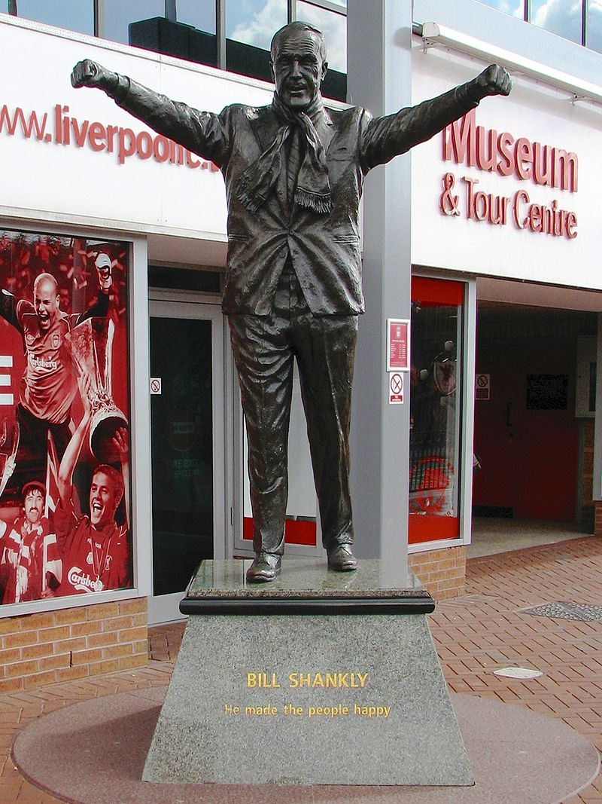
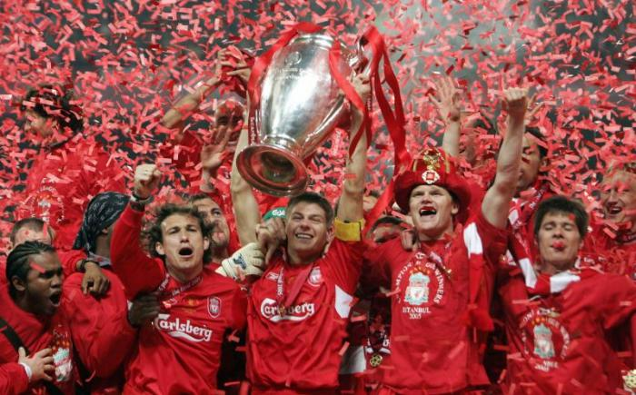
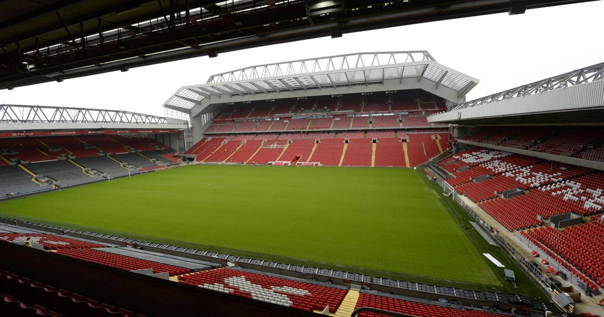
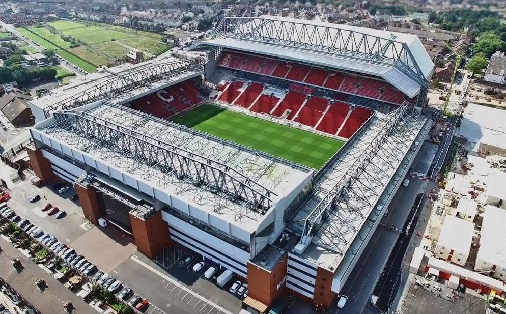
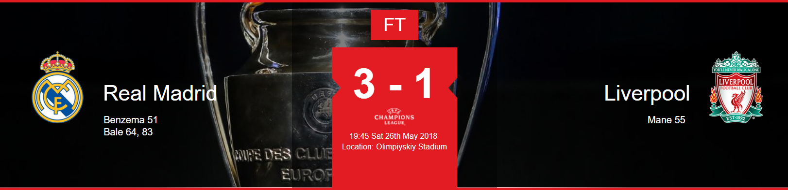
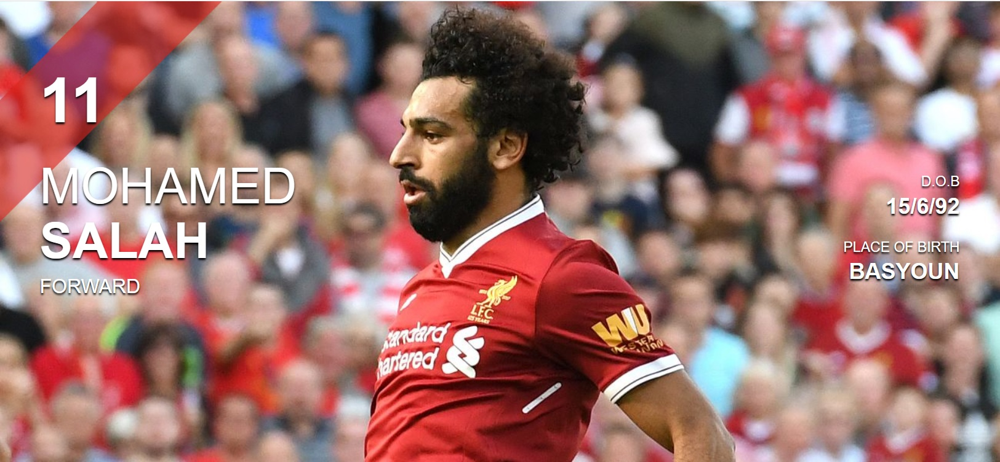
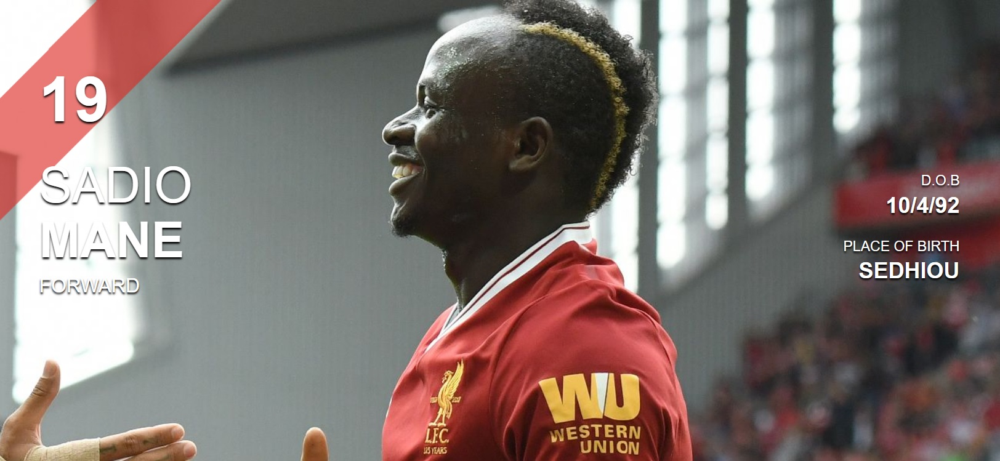
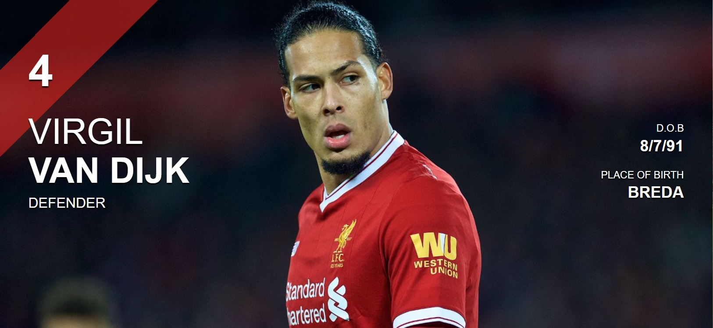
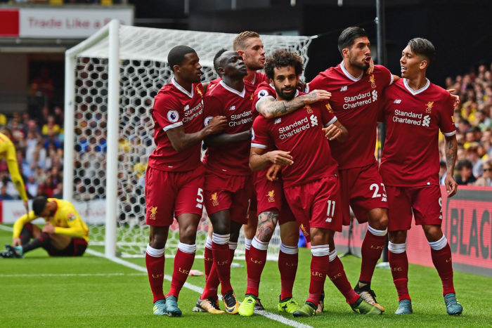
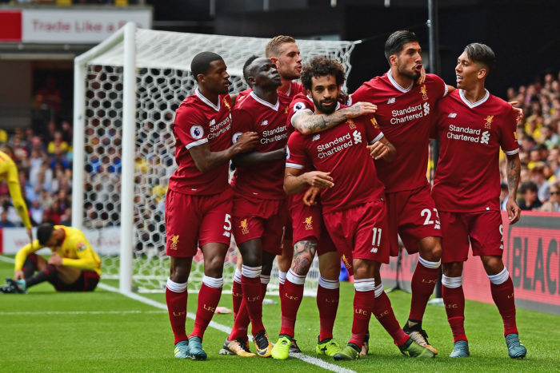

Liverpool Football Clubis a professional football club in Liverpool, England, that competes in the Premier League, the top tier of English
football. The club has won 5 European Cups, 3 UEFA Cups, 3 UEFA Super Cups, 18 League titles, 7 FA Cups, 8 League Cups, and 15 FA Community
Shields.
History


Founded in 1892, the club joined the Football League the following year and has played at Anfield since its formation. Liverpool established itself as a
major force in English and European football in the 1970s and 1980s when Bill Shankly and Bob Paisley led the club to 11 League titles and seven
European trophies. Under the management of Rafael Benítez and captained by Steven Gerrard, Liverpool became European champions for the fifth time
in 2005.
Stadium


Anfield is a football stadium in Anfield, Liverpool, England which has a seating capacity of 54,074 making it the sixth largest football stadium in England. It
has been the home of Liverpool F.C. since their formation in 1892. It was originally the home of Everton F.C. from 1884 to 1891, before they moved to
Goodison Park after a dispute with the club president.
News
Featured Videos
Fabinho exclusive: 'I'm joining a giant of a team'
Klopp's post-Champions League final press conference
Match
Results of last match

Full time
All over in Kiev and it's heartbreak for the Reds.
Sadio Mane's leveller after Karim Benzema opened the scoring offered
hope, but Gareth Bale's double off the bench ultimately decided the final.
Team
Top 3 best players

Here you can find more information on Wikipedia:Mohamed Salah

Here you can find more information on Wikipedia:Sadio Mane

Here you can find more information on Wikipedia:Virgil Vin Dijk

 
